Es una escuela de Tiro con Arco que surge de la necesidad de poder trabajar enfocados en el entrenamiento para la competencia de este deporte, pudiendo marcar y cumplir objetivos a mediano y largo plazo de cada deportista. También contamos con formación a nivel Iniciación para jóvenes y adultos, además de prestar servicios de asesoría y orientación en actividades afines al deporte, talleres complementarios, entre otros.
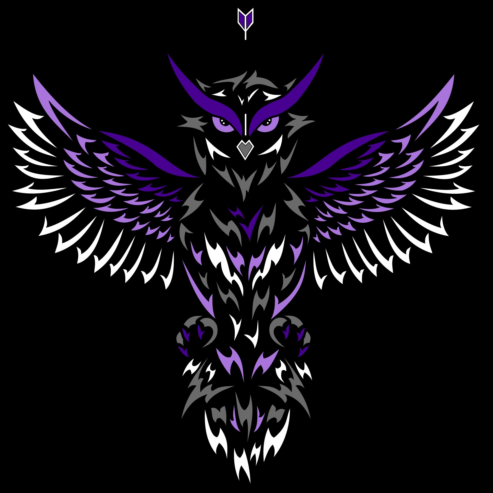
Atenea ofrece un espacio donde en su instalación principal contará con flexibilidad horaria para que quienes concurran puedan administrar sus horarios, asesoria constante, seguimiento, planificación y proyección de objetivos por entrenador del deporte, o el simple uso del espacio, según las necesidades de cada uno. Estarán disponibles los insumos necesarios para la modalidad de cada arquero y con el tiempo se irán implementando mejoras de infraestructura.

El arco tradicional puede contar con un riser (cuerpo) de madera, sin agregados metálicos visibles. Las limbs (palas) pueden estar fabricadas con distintas combinaciones de materiales, tales como madera, fibra de vidrio, metal, fibra de carbono o foam.
Debe utilizar una cuerda adecuada a las características del arco, permitiéndose únicamente la marcación del nock point superior e inferior. Asimismo, puede emplearse un reposaflechas de pluma natural o plástico, siempre que no posea mecanismos de ajuste ni piezas mecánicas.
Se trata de una de las modalidades de arco menos complejas desde el punto de vista mecánico. Por esta razón, el arquero debe desarrollar un alto grado de familiaridad con el equipo, ya que el rendimiento y los resultados dependen principalmente de su técnica, experiencia y habilidad.
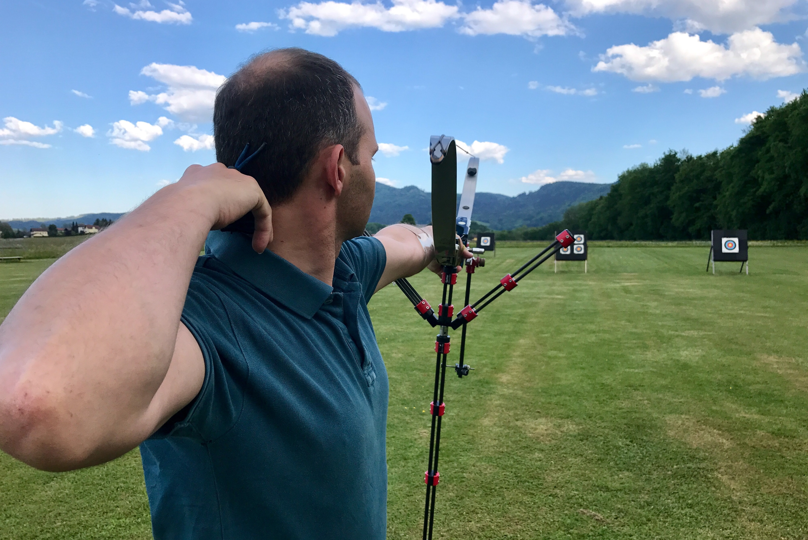
El arco recurvo olímpico es la modalidad utilizada en los Juegos Olímpicos y en numerosas competiciones internacionales.
Se caracteriza por contar con un riser (cuerpo) metálico, generalmente fabricado en aluminio o magnesio, y limbs (palas) construidas con diferentes combinaciones de materiales, como madera, fibra de vidrio, metal, fibra de carbono o foam.
Utiliza una cuerda acorde a las características del arco, en la que se permite la instalación de un nock point superior y otro inferior. Además, puede incorporar un punto de referencia adicional en la cuerda (kisser button u otro sistema similar) que entre en contacto con la nariz o la boca para favorecer una posición de anclaje consistente. Esta modalidad emplea barras estabilizadoras que mejoran el equilibrio y la estabilidad del conjunto, especialmente durante los disparos a largas distancias, como los 70 metros utilizados en las competiciones olímpicas. Asimismo, utiliza una mira de punto sin aumento, que proporciona una referencia visual para el apuntado sin ofrecer magnificación de la imagen.
Gracias a la combinación de estabilidad, precisión y consistencia que ofrecen sus componentes, el arco recurvo olímpico es la modalidad elegida por los arqueros que aspiran a competir a nivel nacional e internacional, tanto en torneos indoor como outdoor.
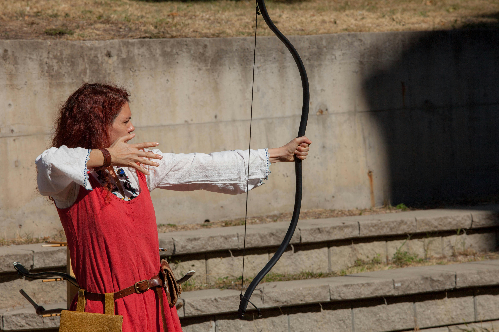
El Barebow es un tipo de arco cuyo riser (cuerpo) es generalmente metálico, fabricado en la mayoría de los casos en aluminio o magnesio. Las limbs (palas) pueden estar construidas con distintas combinaciones de materiales, como madera, fibra de vidrio, metal, fibra de carbono o foam.
Debe utilizar una cuerda adecuada a las características del arco, permitiéndose la instalación de un nock point superior y otro inferior. Asimismo, este tipo de arco puede incorporar pesas en el riser para mejorar la estabilidad, un rest (reposaflechas) metálico ajustable y un button de presión regulable.
Debido a que cuenta con elementos mecánicos que favorecen una mayor precisión, el rendimiento del Barebow depende en gran medida de la técnica del arquero. Pequeñas variaciones en la ejecución del disparo pueden generar cambios significativos en el resultado, siendo este efecto más evidente que en otras modalidades de arco tradicional.
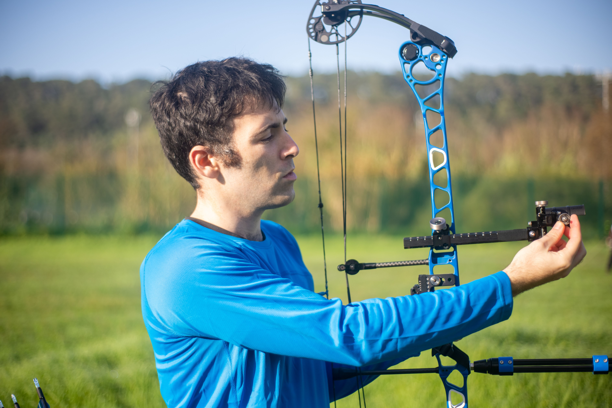
El arco compuesto se caracteriza por utilizar un sistema de poleas y cables que reduce significativamente la fuerza necesaria para mantener el arco tensado, permitiendo una mayor estabilidad durante el apuntado.
Generalmente cuenta con un riser (cuerpo) metálico y limbs (palas) fabricadas con materiales compuestos de alta resistencia. Además, puede incorporar accesorios como estabilizadores, miras, visores, rest (reposaflechas) de precisión y sistemas mecánicos de disparo.
Gracias a su diseño y a la eficiencia de su sistema mecánico, es la modalidad que ofrece el mayor potencial de precisión. Por ello, es ampliamente utilizada en competiciones de alto nivel y elegida por arqueros que buscan maximizar la consistencia y el rendimiento en el tiro.
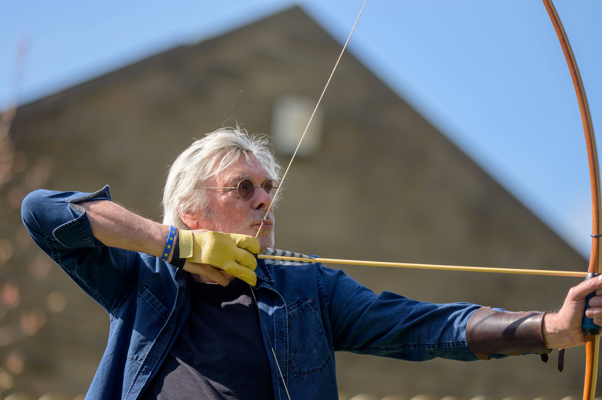
Es una de las modalidades de arco más simples desde el punto de vista mecánico. Se caracteriza por contar con un cuerpo fabricado íntegramente en madera y una ventana donde se apoya la flecha. No se permite el uso de rest (reposaflechas), pudiéndose únicamente adicionar una protección de cuero en la ventana del arco para reducir el desgaste y mejorar el apoyo de la flecha.
Las flechas utilizadas en esta modalidad deben ser de madera y estar emplumadas con pluma natural, manteniendo así las características tradicionales propias de este tipo de arco.
La simplicidad de su diseño hace que el arquero perciba de forma más directa las sensaciones del disparo, sin que estas sean atenuadas por elementos mecánicos o sistemas de estabilización presentes en otras modalidades. Por esta razón, el Longbow es una elección frecuente entre quienes buscan una experiencia de tiro más tradicional y una conexión más directa con el equipo y la técnica de ejecución.
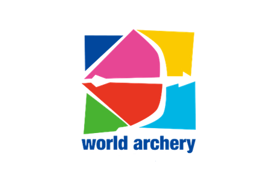
World Archery es la federación internacional de arquería fundada en 1931 para el deporte olímpico y paralímpico. Es la responsable de la regulación y promoción de la arquería alrededor del mundo. Por más información por los tipos de arcos y su uso en competencias internacionales, visite el siguiente link:
Equipamiento
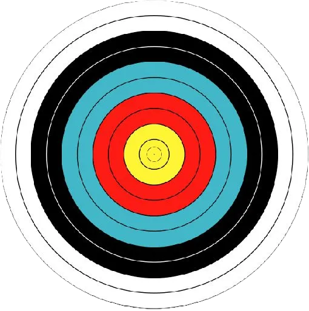
El tiro con arco requiere respiración controlada, concentración y movimientos precisos, lo que ayuda a reducir la ansiedad y el estrés. Practicarlo de forma regular favorece un estado mental más tranquilo y equilibrado.
Esta disciplina fomenta la paciencia, el autocontrol y el respeto por normas, ayudando a jóvenes con conductas impulsivas o desafiantes a desarrollar mayor control sobre sus acciones y emociones.
Apuntar al blanco exige un enfoque sostenido, lo que fortalece la capacidad de atención, útil tanto en el ámbito escolar como en otras actividades.
A medida que los jóvenes mejoran su precisión y alcanzan objetivos, experimentan una sensación de logro que refuerza su autoestima y seguridad personal.
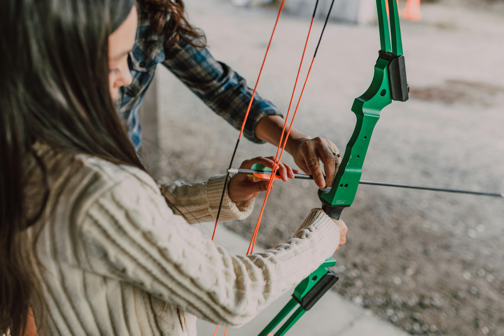
El curso Básico de Iniciación consta de 6 clases de dos horas cada una, pudiendo adicionarse 2 extras en caso de que el entrenador lo considere necesario. Atenea brinda todos los equipos necesarios para el curso y luego del mismo si la persona desea continuar con el deporte se lo asesorará para la compra de su equipo personal.
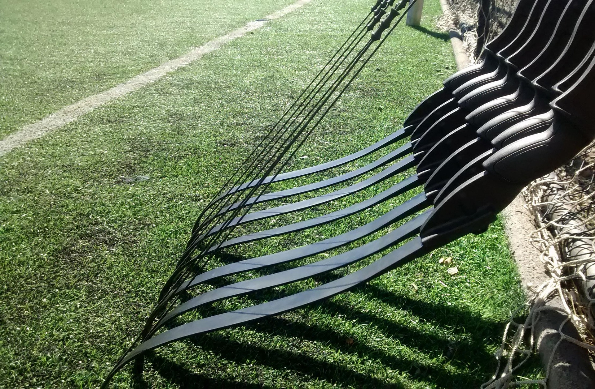
El curso puede contar con historia y evolución de la arquería, con un mayor contenido teórico y práctico logrando un nivel intermedio y preparando a los estudiantes para si ellos asi lo desean poder competir en este deporte. El estudiante contará con, además del curso práctico de iniciación, contenido de historia de la diciplina y el deporte de tiro con arco, así como mantenimiento y ajuste básico del equipo. La cantidad de clases y carga horaria puede ser adapatada a la disponibilidad de cada centro educativo
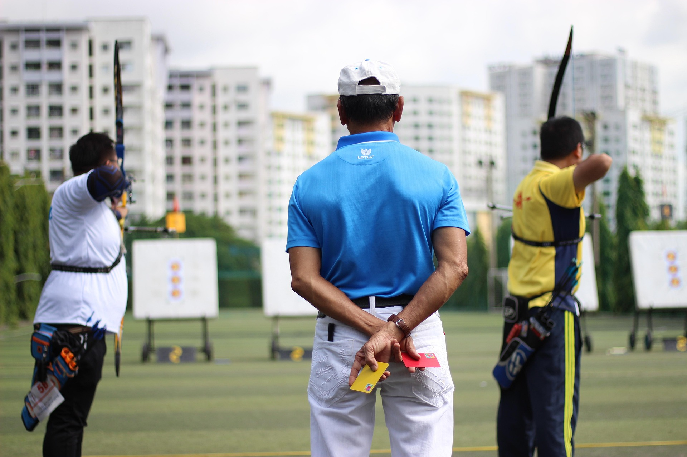
Realizamos entrenamiento específico para cada modalidad de competencia (Indoor, Outdoor, 3d y Campo) preparándonos para cada instancia del torneo a nivel físico, mental y técnico para llegar al mejor rendimiento posible el día del torneo. Trabajamos con herramientas de psicología deportiva, orientación técnica en dinámica de tiro y equipamiento a demás de recordar reglamentación de cada modalidad.
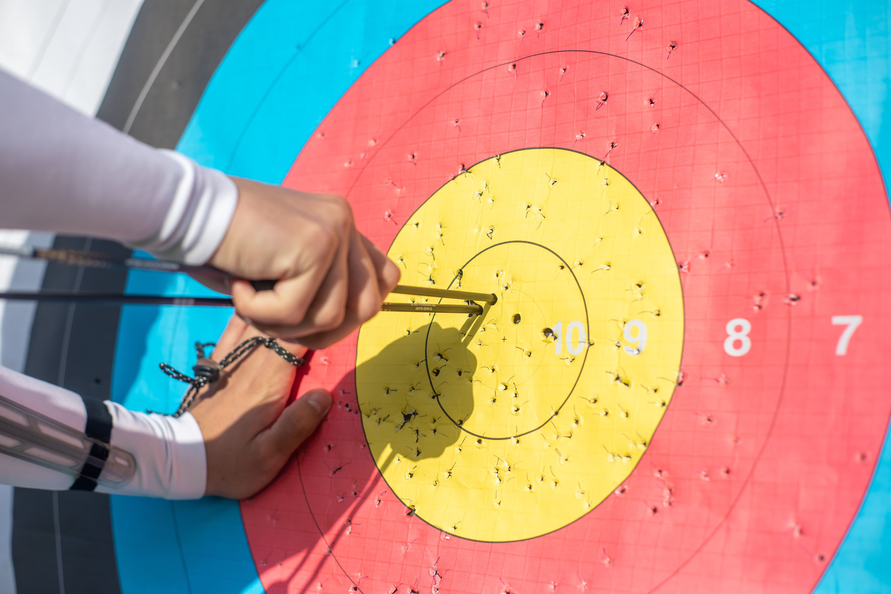
Realizamos talleres presenciales y virtuales pasa arqueros que finalizaron el nivel iniciación y quieran ampliar conocimientos técnicos. Para eso tenemos varios talleres donde trabajamos teoría y práctica de ajuste de equipo para cada estilo de arco (tradicional, barebow y recurvo olimpico) además de cuidados y mantenimiento.
@balam_isa https://www.instagram.com/atenea.tiroconarco?igsh=NHN1Y2I3cG0wODlw
♬ som original - 𝑷𝒆𝒅𝒓𝒂𝒅𝒂𝒔🎵
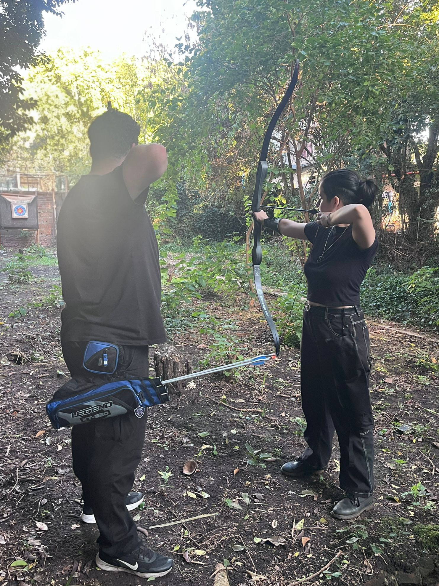
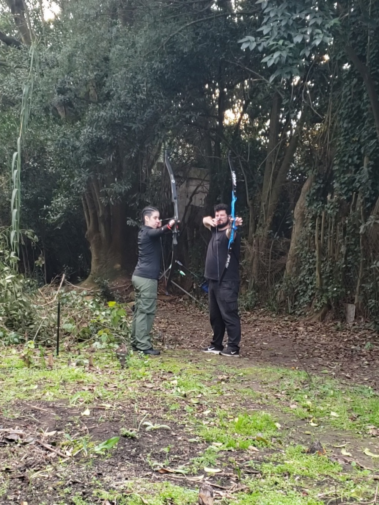

Nos encontramos en la zona de Colón, a pocas cuadras de la Plaza Francisco Vidiella. Podés coordinar una visita a nuestra escuela en horarios flexibles, adaptados tanto a alumnos particulares como a clubes e instituciones que deseen trabajar junto a nosotros.